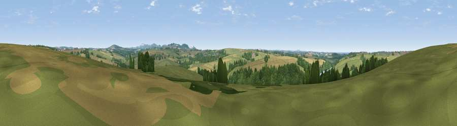

Viewpoint near Carloggas
#22741 in England · top 44% of its area beats it · near Carloggas · access?Where it is
The exact computed spot (SW 88125 62375). Click the marker for map links.
Public access: no public right of way or access land is recorded at this exact spot — it may be on private land. Computed from Natural England's CRoW access layer and OpenStreetMap rights of way — not the legal definitive map. Always verify locally.
The view, rendered

A 360° render of this exact spot computed from the terrain model, tree cover and land cover — summer colours, afternoon light, calibrated against photographs of famous viewpoints. Real trees, hedges and buildings will differ in detail.
The panorama
Grey silhouette: terrain skyline in each direction (720 bearings, Earth curvature and refraction included). Dashed green: skyline with trees (+15 m) and buildings (+8 m) as obstacles. Blue strip: how far the ground is visible on each bearing.
Where the view opens
Wedge length = distance to the farthest visible ground on that bearing (vegetation-aware). Rings at 10, 25 and 50 km.
What fills the view
49% grassland · 29% cropland · 19% woodland · 2% water · 2% built-up
Angular shares of the visible panorama (visual magnitude), not map area. Landscape diversity 0.50 (0–1 Shannon).
Key numbers
More beautiful places nearby
The staircase of upgrades: each row has a higher view potential than everything closer. Driving times are estimates from straight-line distance, calibrated against real road routing — check an actual route before setting out.
| Place | Direction | Drive | Score |
|---|---|---|---|
| Viewpoint near Kestle Mill | S · 2 km | ~6 min | 60.7 |
| Viewpoint near Tregurrian | NW · 5 km | ~11 min | 68.7 |
| Viewpoint near St Eval | NNE · 5 km | ~11 min | 78.3 |
| Penhale Hill | SE · 6 km | ~13 min | 80.3 |
| Viewpoint near Penhale | SSE · 8 km | ~15 min | 81.7 |
| Viewpoint near Nanpean | ESE · 12 km | ~22 min | 84.2 |
| Viewpoint near Foxhole | SE · 12 km | ~23 min | 86.4 |
| Viewpoint near Stenalees | ESE · 13 km | ~24 min | 88.0 |
50.42292, -4.98415 · source: screening · position refined by local search. Computed location — check access rights before visiting.